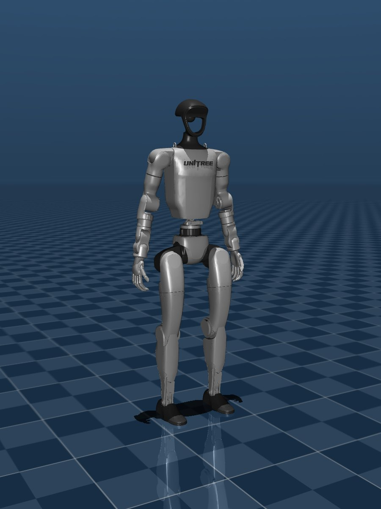

G1 实战让一台人形机器人动起来
以宇树 Unitree G1 为案例，从打开模型、站立、抗推、逆动力学、单腿平衡，一路做到运行预训练的行走策略。每课都有能直接运行的脚本。
- 29
- 个关节
- 1.3 m
- 身高
- 33.3 kg
- 模型质量
- 12
- 课（含附录）

课程
按顺序学。每课先读正文，再运行 code\ 里同课号的脚本。第 8 课是选修挑战，可以跳过。
-
第 0 课 装好环境
wheel 离线安装、版本核对
难度脚本：00_check_env.py、00_read_report.py -
第 1 课 认识 G1
用 Studio 打开它、读懂它的 XML
Studio 查看器、body 树、freejoint、visual 与 collision geom、default 类、qpos/qvel 的排布
难度脚本：01_inspect.py -
第 2 课 它为什么站着、为什么会倒
position 执行器的力公式（kp/kv/forcerange）、关键帧、把 kp 改成 0 看它瘫倒
难度脚本：02_stand_and_fall.py -
第 3 课 把它吊起来挥手
固定骨盆，让手臂按轨迹运动
用 MjSpec 改模型、轨迹插值、记录数据并画跟踪误差
难度脚本：03_wave.py、03_compare_models.py（练习 3） -
第 4 课 它“感觉”到了什么
IMU（gyro/accelerometer）、关节传感器、脚底接触力、质心和支撑区域
难度脚本：04_senses.py -
第 5 课 扛住多大的推力
站立时从侧面推它
难度xfrc_applied外力、直腿与屈膝两种站姿的对比、摩擦与接触参数脚本：05_push.py -
第 6 课 省力地站
算出“刚好站住”需要的力矩
逆动力学
难度mj_inverse、重力补偿、力矩与电机上限对比脚本：06_inverse.py -
第 7 课 伸手去碰一个球
站着用手臂够目标
雅可比、阻尼最小二乘逆运动学、用 MjSpec 加 site 和目标物
难度脚本：07_reach.py -
第 8 课 单腿平衡选修挑战
线性化
难度mjd_transitionFD、LQR，对照官方 LQR notebook 改到 G1 上脚本：08_lqr_balance.py、08_notebook_humanoid.py（官方 notebook 的 humanoid 对照） -
第 9 课 让它走起来
运行宇树的预训练行走策略
拆解策略部署脚本：观测向量、控制分频、PD 力矩；改速度指令、推它、改摩擦，测试鲁棒性
难度脚本：09_walk.py、09_compare_models.py -
第 10 课 录视频、批量做实验
离屏渲染、批量随机推力测试、统计摔倒率
难度脚本：10_video.py、10_batch_push.py -
第 11 课 往后学什么附录
GPU 训练（MuJoCo Playground、mjlab）的入口和所需硬件
脚本：11_model_variants.py
正文在 G1实战/ 下，脚本在 G1实战/code/ 下，脚本输出写到 G1实战/output/。第 9 课的 09_walk.py 有 PyTorch 时用它加载 motion.pt，没有时自动改用 numpy 计算同一个网络，所以 PyTorch 是可选的（见第 0 课 0.6 节）。
第 0 课注意：MuJoCo 4 起，mujoco 拆成了 mujoco-core（仿真核心）和 mujoco-studio（新查看器，依赖 mujoco-studio-wasm）。离线下载 wheel 时要连同依赖一起下，否则装不全。
学习方式
- 每课都有完整脚本（
code/目录，文件名以两位课号开头，见课程表）。先读懂代码，再运行。 - 脚本默认不开窗口：跑完打印关键结果，图片（PNG）、视频（mp4）、数据（CSV）都写到
output/目录。想实时看，第 2–10 课的大部分脚本可以加--view打开查看器（第 1 课直接用 Studio 看）。 - 运行前，先回答“先猜一猜”里的问题；运行时完成“动手观察”，运行后填写“观察记录”。答案放在每课末尾折叠起来的“参考答案”里，跑完再展开对照。
- 正文和答案里的数字都是编写时实际运行得到的。耗时、测速这类数字随电脑和负载变化，以你自己运行的结果为准。
- 每课末尾附“练习”“如果报错”和“延伸阅读”，延伸阅读链接到中文官方文档的对应章节。
- 每课标题下方有一行“对应入门教程”，列出可以对照查阅的《MuJoCo 入门教程》章节（对应关系见本文最后一节）。
看仿真的几种方式
| 方式 | 命令 / 入口 | 需要 Python | 用在哪 |
|---|---|---|---|
| Studio 桌面窗口 | python -m mujoco.studio.viewer --model=... |
是 | 第 1 课；随手打开任何模型 |
| Studio 网页查看器 | 同上，加 --gfx=web |
是（浏览器只负责显示） | 远程桌面、虚拟机里桌面窗口打不开时 |
| 离线 MuJoCo Live | 启动官方文档.bat → 首页 → MuJoCo Live |
否（整个 MuJoCo 在浏览器里运行） | 先睹为快、拖一个模型进去随手看看 |
课程脚本加 --view |
python code/NN_xxx.py --view |
是 | 第 2–10 课：仿真循环在脚本里，用 mujoco.viewer.launch_passive 实时显示 |
用到的开源资源
都已放进资料包的 G1实战\models\。
| 资源 | 来源 | 许可证 | 用途 |
|---|---|---|---|
unitree_g1 模型 |
DeepMind MuJoCo Menagerie（提交 370c439，2026-11-10） | BSD-3-Clause | 第 1–8、10 课的主角（第 11 课附录还会对照它的 g1_mjx.xml、g1_mjlab.xml） |
G1 行走策略 motion.pt + 12 自由度模型 |
宇树 unitree_rl_gym | BSD-3-Clause | 第 9 课让它走起来 |
和《MuJoCo 入门教程》各章的对应关系
原来的《MuJoCo 入门教程》改作“参考手册”：查 API、查 MJCF 属性、排查问题时翻它。G1 实战作为学习主线。两边会双向链接：G1 每课标题下列出“对应入门教程：X.X”，原教程每章开头注明“在 G1 上练习 → 第 X 课”。
| 原教程章节 | G1 实战 |
|---|---|
| 1 MuJoCo 简介 | 大纲 + 第 1 课 |
| 2 安装与环境 | 第 0 课 |
| 3.1 从文件到仿真 | 第 1 课 |
| 3.2 广义坐标 nq / nv | 第 1 课（1.4、1.5） |
| 3.3 MjData 常用字段、3.5 一步仿真里发生了什么 | 第 2、4 课 |
| 3.4 单位与坐标系 | 第 1 课（四元数顺序、弧度） |
| 4.1–4.5 MJCF 结构、元素、姿态、default、compiler/option | 第 1 课（读 G1 的 XML） |
| 4.6 完整示例、4.7 模型复用 | 第 1 课（scene.xml include g1.xml）；第 3、7 课 |
| 5.1–5.3 加载、仿真循环、按名字访问 | 第 1、2 课 |
| 5.4 修改状态后调用 mj_forward | 第 1、2 课 |
| 5.5 重置、关键帧、状态保存 | 第 2 课 |
| 5.6 施加外力 | 第 5 课 |
| 5.7 读取接触 | 第 4 课 |
| 5.8 保存模型 | 第 3 课 |
| 6.1–6.3 查看器、在自己的循环中显示 | 第 1、3 课 |
| 6.4 离屏渲染 | 第 10 课 |
| 7.1 执行器类型 | 第 2 课（position）、第 9 课（motor） |
| 7.2 传感器 | 第 4 课 |
| 7.3 PD + 重力补偿 | 第 3、6 课 |
| 7.4 控制频率与延迟 | 第 9 课（策略 50 Hz，仿真 500 Hz） |
| 8.1 碰撞过滤 | 第 1 课（visual 与 collision）、第 7 课 |
| 8.2–8.3 摩擦、solref / solimp | 第 5 课 |
| 8.4 积分器与求解器 | 第 2、5 课 |
| 8.5 防止抓取打滑 | （人形不涉及，保留在参考手册） |
| 8.6 稳定性调优清单 | 第 5、9 课 |
| 9.1 雅可比与逆运动学 | 第 7 课；第 8 课（用 IK 摆单腿站姿） |
| 9.2 逆动力学与质量矩阵 | 第 6 课；第 8 课（mjd_transitionFD 线性化） |
| 9.3 导入 URDF | 第 3 课练习 3：资料包里没有宇树官方 URDF，改为对比宇树从 URDF 转出的 g1_12dof.xml 与 Menagerie 版 |
| 9.4 程序化建模 MjSpec | 第 3、7 课 |
| 9.5 批量仿真 | 第 10 课 |
| 10.1–10.3 MJX、Warp、Playground | 附录第 11 课（需要 NVIDIA GPU） |
| 10.4 Gymnasium 与强化学习 | 第 9 课（部署已训练策略）+ 附录第 11 课 |
| 11 常见问题排查 | 每课“如果报错” |
| 12 速查表、13 参考资料 | 保留在参考手册 |